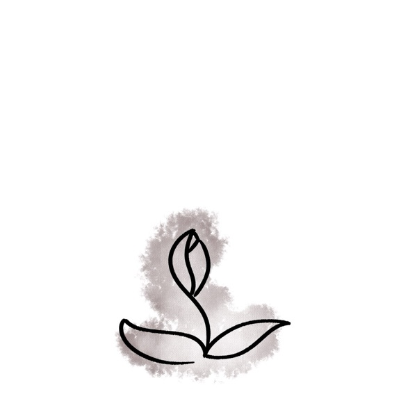
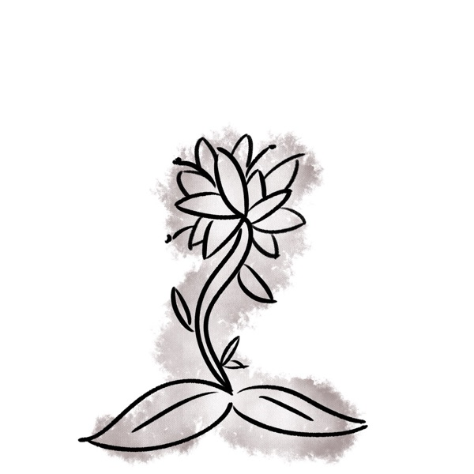
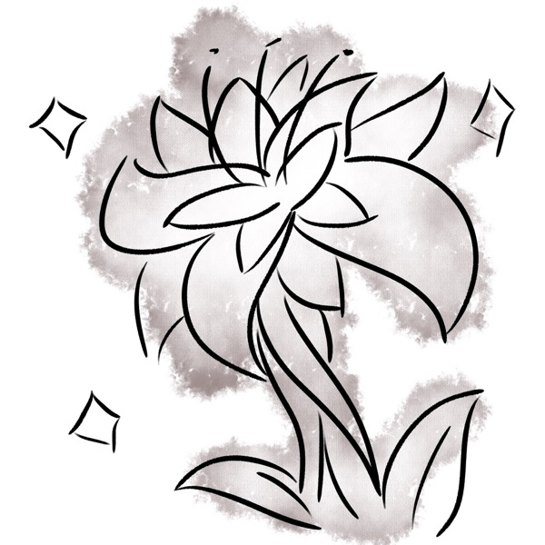
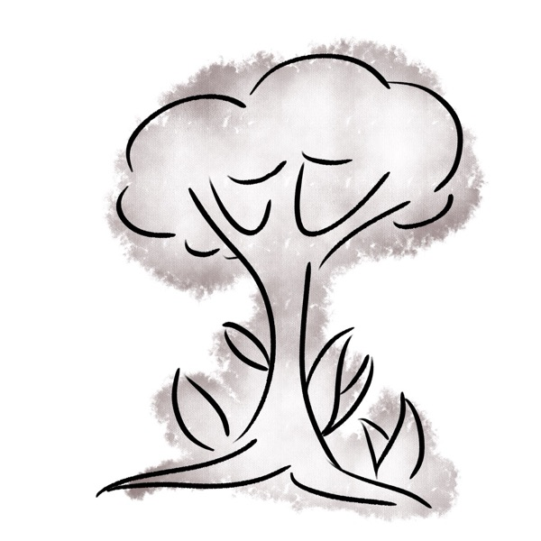
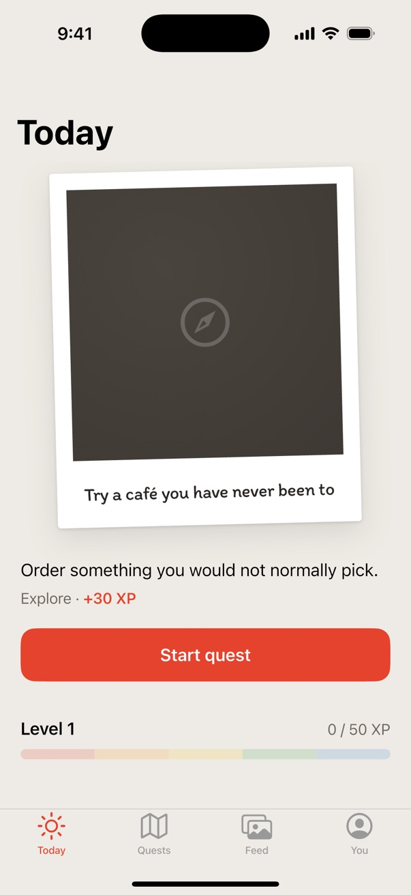
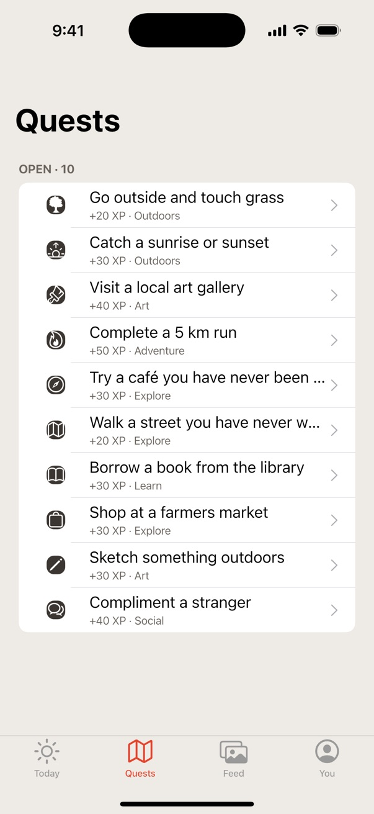

Side Quests
A mobile app that gets friends off their phones and out on small real-world challenges, like visiting a local park or picking up a new hobby. Complete quests together to earn points and level up. Built in a team at VicHack.
- Prep: one hackathon
- Serves: a team of 6
- Difficulty: Medium






Ingredients
 Dart
Dart Flutter
Flutter- Firebase
Method
- Sketch every screen on paper first: sign-in, the quest board, a live quest and the leaderboard. Draw arrows to show how a player moves between them.
- Build the screens in Flutter, writing the app logic in Dart. Keep each screen as its own widget so they can be prepared separately.
- Fold in Firebase for sign-in, so every player has an account to hold their points.
- Add location tracking through Firebase. Check that everyone in a group is close together before a quest can start, so it is done as a team.
- Finish with a points system that rewards each player when a quest is completed, then let them level up. Test on a real phone and adjust until it feels right.
Order 02Mobile
Chef's Notes
None of us had used Flutter or Firebase before VicHack, so much of the hackathon went into learning them on the fly, and getting six people set up on GitHub took longer than expected. Location tracking was the hardest part to get right and the part we were proudest of. The app went on to win three VicHack awards: Best Video Submission, Best Social Impact Project and Best Social Media Post.